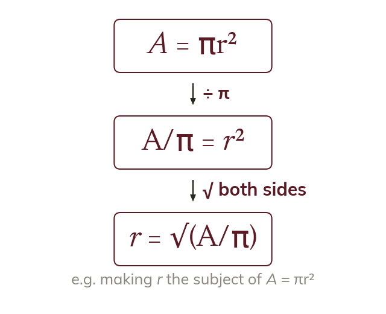

Squares and roots undo each other
Squaring and square-rooting undo each other. So a squared subject is freed by rooting both sides.
Squaring and square-rooting are inverse operations, as are cubing and cube-rooting. So a squared subject is freed by taking the square root of both sides, once everything else has been undone.